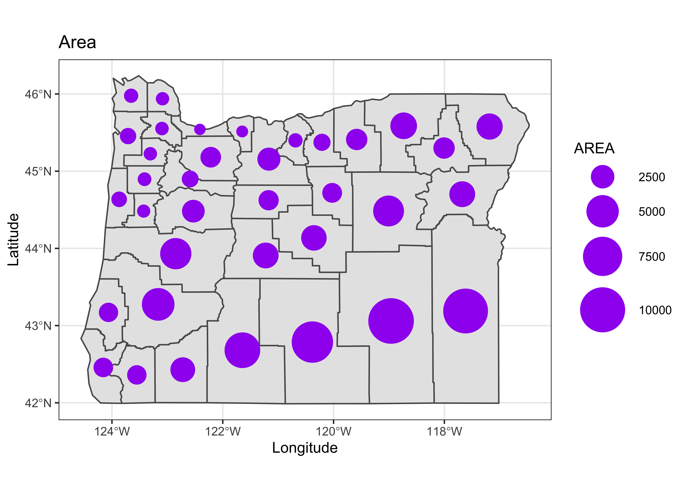

Maps in R
NOTE: This page has been revised for Spring 2020, but may undergo further edits.
1 Introduction
One extremely useful feature of R for analyzing geographical data is its ability to provide maps of data in the same computing environment that the data analysis is being performed in, and moreover, to read, manipulate and analyze data with explicitly spatial coordinate information. This facility for handling spatial data was built into S relatively early on, and is now implemented three ways, through the following packages:
maps, which contains a database of world, country (and for the U.S.) state outlines, and includes functions (in themapprojpackage) for doing projections (or “spatial transforms”);sp(“spatial”), which provides a format for spatial data in R, and a number of functions for its input (through thergdalpackage), output and display (together constituting a set of “classes and methods”), thergeospackage, which implements many of the spatial topology functions that formerly required a full suite of GIS software;sfwhich implements the “simple features” approach of representing spatial objects and their geometries [https://r-spatial.github.io/sf/index.html], and uses the “built-in”data.frame(ortibble) structure in R to store and manipulate data, while linking to the GEOS, GDAL, and PROJ libraries directly. The ’sf` package now seems to be the main focus for development of geospatial analyses and mapping in R.
Two other projects/packages are aimed at handling spatial data. These include:
raster(and the relatedrasterVispackage, which implementslattice-type graphics) for handing raster data [https://rspatial.org/raster/index.html] (and which is accompanied by theterrapackage, which is “conceived as a replacement” for raster [https://rspatial.org/terra/index.html] )stars, which considers all data to be both spatial and temporal, with those that aren’t thought of as special cases, as opposed to typical [https://r-spatial.github.io/stars/] which is designed to handle spatiotemporal arrays or datacubes.
The main place to go to get an overview of the kinds and capabilities of the spatial packages in R is the Spatial Task Views on CRAN
2 Maps in R – example data and setup
The examples here use several libraries, datasets, and shapefiles that should be downloaded and/or installed, and read in before proceeding.
The easiest way to get most of these data files and shape-file components, is to download a copy of the workspace geog495.RData and “load” it, or read it in. (Some of the larger files are not included.) Otherwise, all of them are available to download from the Datasets on the Other tab of the course web page.
Right-click on the above link, and save it to your working folder. (If you’ve forgotten where that is, type getwd() on the command line). Then read it in to R
2.1 Shapefiles as spatial or simple-features objects
The difference in the internal (to R) representation of spatial data (as exemplified by a shapefile) by the sp and sf packages can be seen by reading a typical shapefile (polygon outlines of western U.S. states) by both
Load some libraries:
## rgeos version: 0.5-2, (SVN revision 621)
## GEOS runtime version: 3.7.2-CAPI-1.11.2
## Linking to sp version: 1.3-1
## Polygon checking: TRUE## rgdal: version: 1.4-8, (SVN revision 845)
## Geospatial Data Abstraction Library extensions to R successfully loaded
## Loaded GDAL runtime: GDAL 2.4.2, released 2019/06/28
## Path to GDAL shared files: /Library/Frameworks/R.framework/Versions/3.6/Resources/library/rgdal/gdal
## GDAL binary built with GEOS: FALSE
## Loaded PROJ.4 runtime: Rel. 5.2.0, September 15th, 2018, [PJ_VERSION: 520]
## Path to PROJ.4 shared files: /Library/Frameworks/R.framework/Versions/3.6/Resources/library/rgdal/proj
## Linking to sp version: 1.3-2## Linking to GEOS 3.7.2, GDAL 2.4.2, PROJ 5.2.0Note that the sp requires the rgeos and rgdal packages for manipulating and reading spatial data, while the sf package links to compiled versions of the GEOS, GDAL, and PROJ5 libraries.
Read the shapefile as an sp object. (The class() function tells us what kind of object it is, and head() lists the first few lines as well as some information about the object.)
Load a couple of other libraries that will be used here:
# read a shapefile
shapefile <- "/Users/bartlein/Documents/geog495/data/shp/wus.shp"
wus_sp <- readOGR(shapefile)## OGR data source with driver: ESRI Shapefile
## Source: "/Users/bartlein/Documents/geog495/data/shp/wus.shp", layer: "wus"
## with 17 features
## It has 1 fields## [1] "SpatialPolygonsDataFrame"
## attr(,"package")
## [1] "sp"## An object of class "SpatialPolygonsDataFrame"
## Slot "data":
## ID
## 0 arizona
## 1 california
## 2 colorado
## 3 idaho
## 4 kansas
## 5 montana
##
## Slot "polygons":
## [[1]]
## An object of class "Polygons"
## Slot "Polygons":
## [[1]]
## An object of class "Polygon"
## Slot "labpt":
## [1] -111.6679 34.3006
##
## Slot "area":
## [1] 28.8175
##
## Slot "hole":
## [1] FALSE
##
## Slot "ringDir":
## [1] 1
##
## Slot "coords":
## [,1] [,2]
## [1,] -114.6374 35.01918
## [2,] -114.6431 35.10512
## [3,] -114.6030 35.12231
## [4,] -114.5744 35.17961
## [5,] -114.5858 35.23690
## [6,] -114.5973 35.28274
## [7,] -114.6087 35.35723
## [8,] -114.6259 35.40879
## [9,] -114.6660 35.45463
## [10,] -114.6603 35.50047
## [11,] -114.6660 35.54057
## [12,] -114.6718 35.60933
## [13,] -114.6832 35.66662
## [14,] -114.7004 35.71246
## [15,] -114.7004 35.79268
## [16,] -114.6890 35.88435
## [17,] -114.7119 35.91299
## [18,] -114.7348 35.95883
## [19,] -114.7348 36.01613
## [20,] -114.7577 36.06197
## [21,] -114.7348 36.10780
## [22,] -114.7004 36.11926
## [23,] -114.6431 36.14218
## [24,] -114.5572 36.15364
## [25,] -114.4884 36.13645
## [26,] -114.3968 36.13645
## [27,] -114.3280 36.11353
## [28,] -114.3108 36.04478
## [29,] -114.2650 36.02758
## [30,] -114.2019 36.02186
## [31,] -114.1389 36.03905
## [32,] -114.1160 36.09634
## [33,] -114.0816 36.13645
## [34,] -114.0530 36.21093
## [35,] -114.0472 36.84119
## [36,] -114.0415 36.99588
## [37,] -113.8238 36.99588
## [38,] -113.5373 37.00161
## [39,] -113.2795 37.00161
## [40,] -113.0045 37.00161
## [41,] -112.9071 36.99588
## [42,] -112.7294 37.00161
## [43,] -112.5404 36.99588
## [44,] -112.4143 36.99588
## [45,] -112.2081 36.99588
## [46,] -111.9502 37.00161
## [47,] -111.6867 37.00161
## [48,] -111.4116 37.00161
## [49,] -111.3200 37.00161
## [50,] -111.2512 36.99588
## [51,] -111.1252 36.99588
## [52,] -110.8444 37.00161
## [53,] -110.7585 36.99588
## [54,] -110.6840 36.99588
## [55,] -110.5465 36.99588
## [56,] -110.3058 37.00161
## [57,] -110.0881 37.00161
## [58,] -110.0079 37.00161
## [59,] -109.9334 36.99588
## [60,] -109.7157 36.99588
## [61,] -109.4120 36.99588
## [62,] -109.1485 36.99588
## [63,] -109.0396 36.99588
## [64,] -109.0453 35.99894
## [65,] -109.0511 34.95043
## [66,] -109.0511 34.57227
## [67,] -109.0568 33.77586
## [68,] -109.0511 33.20290
## [69,] -109.0568 32.77892
## [70,] -109.0568 32.42368
## [71,] -109.0568 31.35225
## [72,] -109.2344 31.35225
## [73,] -109.6240 31.34652
## [74,] -109.9964 31.35225
## [75,] -110.3517 31.35225
## [76,] -110.4777 31.35225
## [77,] -110.6324 31.35225
## [78,] -110.9877 31.34652
## [79,] -111.1194 31.35798
## [80,] -111.2971 31.41528
## [81,] -111.3887 31.44392
## [82,] -111.6294 31.51841
## [83,] -112.0362 31.65019
## [84,] -112.3284 31.74186
## [85,] -112.6664 31.83927
## [86,] -112.9300 31.92521
## [87,] -113.1878 32.00542
## [88,] -113.3482 32.05699
## [89,] -113.4686 32.09710
## [90,] -113.7436 32.18877
## [91,] -114.0358 32.27471
## [92,] -114.3165 32.36066
## [93,] -114.7004 32.48098
## [94,] -114.8093 32.51535
## [95,] -114.7978 32.57838
## [96,] -114.7692 32.67006
## [97,] -114.7348 32.73308
## [98,] -114.6890 32.74454
## [99,] -114.6546 32.73881
## [100,] -114.5916 32.73881
## [101,] -114.5515 32.76173
## [102,] -114.5228 32.82475
## [103,] -114.4770 32.87632
## [104,] -114.4770 32.93362
## [105,] -114.4827 32.99664
## [106,] -114.5400 33.04247
## [107,] -114.6603 33.05394
## [108,] -114.7004 33.08258
## [109,] -114.7119 33.13415
## [110,] -114.6890 33.26593
## [111,] -114.7405 33.31176
## [112,] -114.7176 33.35760
## [113,] -114.7291 33.40344
## [114,] -114.6890 33.43209
## [115,] -114.6488 33.45501
## [116,] -114.6374 33.48365
## [117,] -114.6087 33.50084
## [118,] -114.6202 33.52949
## [119,] -114.5686 33.54668
## [120,] -114.5572 33.57533
## [121,] -114.5285 33.63262
## [122,] -114.5400 33.69565
## [123,] -114.5228 33.73003
## [124,] -114.5400 33.78159
## [125,] -114.5400 33.92483
## [126,] -114.5171 33.96494
## [127,] -114.4540 33.99932
## [128,] -114.4712 34.01650
## [129,] -114.4483 34.03942
## [130,] -114.4197 34.07953
## [131,] -114.3968 34.11391
## [132,] -114.2993 34.15401
## [133,] -114.2306 34.19985
## [134,] -114.1905 34.24569
## [135,] -114.1332 34.26287
## [136,] -114.1389 34.29725
## [137,] -114.1676 34.33736
## [138,] -114.2879 34.42330
## [139,] -114.3738 34.46914
## [140,] -114.4025 34.58946
## [141,] -114.4197 34.61238
## [142,] -114.4483 34.70978
## [143,] -114.5744 34.80719
## [144,] -114.5515 34.83583
## [145,] -114.5457 34.84729
## [146,] -114.5686 34.86448
## [147,] -114.6087 34.88740
## [148,] -114.6317 34.96188
## [149,] -114.6374 35.01918
##
##
##
## Slot "plotOrder":
## [1] 1
##
## Slot "labpt":
## [1] -111.6679 34.3006
##
## Slot "ID":
## [1] "0"
##
## Slot "area":
## [1] 28.8175
##
##
## [[2]]
## An object of class "Polygons"
## Slot "Polygons":
## [[1]]
## An object of class "Polygon"
## Slot "labpt":
## [1] -119.60154 37.26901
##
## Slot "area":
## [1] 41.19048
##
## Slot "hole":
## [1] FALSE
##
## Slot "ringDir":
## [1] 1
##
## Slot "coords":
## [,1] [,2]
## [1,] -120.0060 42.00927
## [2,] -120.0060 41.20139
## [3,] -120.0060 39.70024
## [4,] -119.9946 39.44241
## [5,] -120.0060 39.31636
## [6,] -120.0060 39.16166
## [7,] -120.0060 39.11583
## [8,] -120.0060 39.06426
## [9,] -119.9946 38.98978
## [10,] -119.8685 38.90956
## [11,] -119.5706 38.69757
## [12,] -119.3299 38.53141
## [13,] -119.1408 38.39963
## [14,] -118.4189 37.88397
## [15,] -117.8460 37.47717
## [16,] -117.1813 36.98442
## [17,] -115.8979 36.00467
## [18,] -115.6744 35.83278
## [19,] -114.6374 35.01918
## [20,] -114.6317 34.96188
## [21,] -114.6087 34.88740
## [22,] -114.5686 34.86448
## [23,] -114.5457 34.84729
## [24,] -114.5515 34.83583
## [25,] -114.5744 34.80719
## [26,] -114.4483 34.70978
## [27,] -114.4197 34.61238
## [28,] -114.4025 34.58946
## [29,] -114.3738 34.46914
## [30,] -114.2879 34.42330
## [31,] -114.1676 34.33736
## [32,] -114.1389 34.29725
## [33,] -114.1332 34.26287
## [34,] -114.1905 34.24569
## [35,] -114.2306 34.19985
## [36,] -114.2993 34.15401
## [37,] -114.3968 34.11391
## [38,] -114.4197 34.07953
## [39,] -114.4483 34.03942
## [40,] -114.4712 34.01650
## [41,] -114.4540 33.99932
## [42,] -114.5171 33.96494
## [43,] -114.5400 33.92483
## [44,] -114.5400 33.78159
## [45,] -114.5228 33.73003
## [46,] -114.5400 33.69565
## [47,] -114.5285 33.63262
## [48,] -114.5572 33.57533
## [49,] -114.5686 33.54668
## [50,] -114.6202 33.52949
## [51,] -114.6087 33.50084
## [52,] -114.6374 33.48365
## [53,] -114.6488 33.45501
## [54,] -114.6890 33.43209
## [55,] -114.7291 33.40344
## [56,] -114.7176 33.35760
## [57,] -114.7405 33.31176
## [58,] -114.6890 33.26593
## [59,] -114.7119 33.13415
## [60,] -114.7004 33.08258
## [61,] -114.6603 33.05394
## [62,] -114.5400 33.04247
## [63,] -114.4827 32.99664
## [64,] -114.4770 32.93362
## [65,] -114.4770 32.87632
## [66,] -114.5228 32.82475
## [67,] -114.5515 32.76173
## [68,] -114.5916 32.73881
## [69,] -114.6546 32.73881
## [70,] -114.6890 32.74454
## [71,] -114.7348 32.73308
## [72,] -116.1042 32.62422
## [73,] -117.1126 32.53827
## [74,] -117.1126 32.59557
## [75,] -117.1126 32.61849
## [76,] -117.1240 32.64141
## [77,] -117.1584 32.66433
## [78,] -117.1641 32.68151
## [79,] -117.1527 32.68724
## [80,] -117.1011 32.64141
## [81,] -117.0839 32.62995
## [82,] -117.0839 32.65286
## [83,] -117.0954 32.68724
## [84,] -117.1240 32.70443
## [85,] -117.1469 32.72162
## [86,] -117.1584 32.73308
## [87,] -117.1813 32.73308
## [88,] -117.1985 32.70443
## [89,] -117.2100 32.69870
## [90,] -117.2272 32.71016
## [91,] -117.2329 32.75027
## [92,] -117.2100 32.76746
## [93,] -117.2042 32.78465
## [94,] -117.2100 32.79610
## [95,] -117.2272 32.80756
## [96,] -117.2501 32.82475
## [97,] -117.2558 32.85340
## [98,] -117.2329 32.87632
## [99,] -117.2272 32.91643
## [100,] -117.2443 32.99091
## [101,] -117.2501 33.03102
## [102,] -117.2845 33.10550
## [103,] -117.3188 33.15134
## [104,] -117.3532 33.21436
## [105,] -117.4048 33.26593
## [106,] -117.4334 33.31176
## [107,] -117.4735 33.34042
## [108,] -117.5251 33.37479
## [109,] -117.5652 33.40344
## [110,] -117.5824 33.43209
## [111,] -117.6454 33.46074
## [112,] -117.6798 33.48365
## [113,] -117.7142 33.50657
## [114,] -117.7428 33.54095
## [115,] -117.7887 33.58678
## [116,] -117.8345 33.62116
## [117,] -117.8689 33.63262
## [118,] -117.8918 33.63262
## [119,] -117.9319 33.66127
## [120,] -118.0064 33.72430
## [121,] -118.0579 33.75294
## [122,] -118.0809 33.76440
## [123,] -118.0923 33.77586
## [124,] -118.1382 33.78732
## [125,] -118.1725 33.79305
## [126,] -118.2069 33.77586
## [127,] -118.2356 33.77586
## [128,] -118.2356 33.75294
## [129,] -118.2470 33.73576
## [130,] -118.2814 33.73576
## [131,] -118.3043 33.74722
## [132,] -118.3272 33.75294
## [133,] -118.3674 33.76440
## [134,] -118.3903 33.78159
## [135,] -118.3903 33.80451
## [136,] -118.3731 33.82743
## [137,] -118.3674 33.85608
## [138,] -118.3903 33.91337
## [139,] -118.4418 33.98213
## [140,] -118.4533 34.01077
## [141,] -118.4819 34.02797
## [142,] -118.5335 34.03942
## [143,] -118.6596 34.05088
## [144,] -118.7283 34.03942
## [145,] -118.7741 34.03369
## [146,] -118.8085 34.03942
## [147,] -118.9289 34.06807
## [148,] -118.9460 34.07953
## [149,] -118.9919 34.09099
## [150,] -119.0263 34.11964
## [151,] -119.0549 34.11964
## [152,] -119.1007 34.11391
## [153,] -119.1580 34.15401
## [154,] -119.1981 34.22850
## [155,] -119.2268 34.26860
## [156,] -119.2382 34.29152
## [157,] -119.3299 34.32017
## [158,] -119.3930 34.36601
## [159,] -119.4388 34.40612
## [160,] -119.4903 34.41758
## [161,] -119.5362 34.43476
## [162,] -119.5820 34.44049
## [163,] -119.6680 34.41758
## [164,] -119.7253 34.42904
## [165,] -119.7768 34.43476
## [166,] -119.8399 34.42904
## [167,] -119.8857 34.44049
## [168,] -119.9487 34.46341
## [169,] -119.9946 34.46914
## [170,] -120.0633 34.46914
## [171,] -120.1263 34.47487
## [172,] -120.2753 34.46914
## [173,] -120.4013 34.46341
## [174,] -120.4300 34.47487
## [175,] -120.4644 34.51498
## [176,] -120.4988 34.55508
## [177,] -120.5675 34.57227
## [178,] -120.6076 34.58373
## [179,] -120.6191 34.62957
## [180,] -120.5847 34.68687
## [181,] -120.5847 34.74416
## [182,] -120.6133 34.78427
## [183,] -120.6076 34.82438
## [184,] -120.5732 34.86448
## [185,] -120.6019 34.89886
## [186,] -120.6133 34.91605
## [187,] -120.6305 34.93896
## [188,] -120.6191 34.96188
## [189,] -120.6191 35.01345
## [190,] -120.6019 35.05356
## [191,] -120.5962 35.12804
## [192,] -120.6191 35.16815
## [193,] -120.6535 35.18534
## [194,] -120.6878 35.19107
## [195,] -120.6936 35.17388
## [196,] -120.7165 35.17388
## [197,] -120.7623 35.20826
## [198,] -120.8139 35.23117
## [199,] -120.8540 35.28274
## [200,] -120.8540 35.31139
## [201,] -120.8253 35.34577
## [202,] -120.8139 35.34577
## [203,] -120.7967 35.33431
## [204,] -120.7852 35.34004
## [205,] -120.8139 35.40306
## [206,] -120.8425 35.44317
## [207,] -120.8483 35.46609
## [208,] -120.8884 35.46609
## [209,] -120.9686 35.47182
## [210,] -121.0030 35.50620
## [211,] -121.0717 35.57495
## [212,] -121.1233 35.63225
## [213,] -121.1634 35.64943
## [214,] -121.2150 35.68381
## [215,] -121.2493 35.70673
## [216,] -121.2722 35.74684
## [217,] -121.2722 35.78695
## [218,] -121.3066 35.79840
## [219,] -121.3353 35.83278
## [220,] -121.3754 35.86143
## [221,] -121.4098 35.88435
## [222,] -121.4441 35.91872
## [223,] -121.4670 35.98175
## [224,] -121.4957 36.02186
## [225,] -121.5358 36.04478
## [226,] -121.5702 36.09634
## [227,] -121.6217 36.16510
## [228,] -121.6676 36.19374
## [229,] -121.6962 36.22239
## [230,] -121.7306 36.22812
## [231,] -121.7822 36.25104
## [232,] -121.8280 36.29115
## [233,] -121.8624 36.31979
## [234,] -121.8624 36.34844
## [235,] -121.8624 36.38282
## [236,] -121.8910 36.46303
## [237,] -121.8968 36.49741
## [238,] -121.9311 36.52606
## [239,] -121.9311 36.53752
## [240,] -121.9082 36.54325
## [241,] -121.9197 36.57763
## [242,] -121.9311 36.58335
## [243,] -121.9140 36.62346
## [244,] -121.8910 36.64065
## [245,] -121.8509 36.63492
## [246,] -121.8337 36.62919
## [247,] -121.7936 36.65784
## [248,] -121.7707 36.72087
## [249,] -121.7593 36.77816
## [250,] -121.7650 36.84119
## [251,] -121.7707 36.85265
## [252,] -121.7650 36.88129
## [253,] -121.7994 36.90994
## [254,] -121.8337 36.95005
## [255,] -121.8853 36.97297
## [256,] -121.9082 36.98442
## [257,] -121.9254 36.96724
## [258,] -121.9541 36.96724
## [259,] -121.9713 36.97869
## [260,] -122.0114 36.96724
## [261,] -122.0343 36.96724
## [262,] -122.1030 36.98442
## [263,] -122.1603 37.01880
## [264,] -122.2119 37.05318
## [265,] -122.2348 37.09329
## [266,] -122.2577 37.11048
## [267,] -122.2921 37.12193
## [268,] -122.3036 37.14485
## [269,] -122.3208 37.15631
## [270,] -122.3380 37.19069
## [271,] -122.3723 37.21934
## [272,] -122.3895 37.25945
## [273,] -122.3838 37.31101
## [274,] -122.3723 37.35685
## [275,] -122.3781 37.40841
## [276,] -122.4010 37.41988
## [277,] -122.4182 37.44852
## [278,] -122.4182 37.48863
## [279,] -122.4296 37.50582
## [280,] -122.4697 37.51728
## [281,] -122.4869 37.55165
## [282,] -122.4869 37.57457
## [283,] -122.4869 37.61468
## [284,] -122.4583 37.63187
## [285,] -122.4583 37.64906
## [286,] -122.4697 37.67198
## [287,] -122.4583 37.70062
## [288,] -122.4697 37.71781
## [289,] -122.4812 37.76365
## [290,] -122.4812 37.78657
## [291,] -122.4583 37.79230
## [292,] -122.4468 37.79230
## [293,] -122.4124 37.81522
## [294,] -122.4010 37.80376
## [295,] -122.3838 37.80376
## [296,] -122.3437 37.80376
## [297,] -122.3437 37.78657
## [298,] -122.3380 37.76365
## [299,] -122.3208 37.73500
## [300,] -122.3437 37.72927
## [301,] -122.3609 37.71781
## [302,] -122.3609 37.70062
## [303,] -122.3494 37.67770
## [304,] -122.3322 37.66051
## [305,] -122.3380 37.63760
## [306,] -122.3437 37.61468
## [307,] -122.3093 37.60322
## [308,] -122.2520 37.59176
## [309,] -122.2176 37.57457
## [310,] -122.1947 37.55165
## [311,] -122.1546 37.53447
## [312,] -122.1145 37.52301
## [313,] -122.0916 37.50582
## [314,] -122.0801 37.50009
## [315,] -122.0629 37.48290
## [316,] -122.0457 37.47144
## [317,] -122.0056 37.45998
## [318,] -121.9713 37.45998
## [319,] -121.9483 37.47717
## [320,] -121.9541 37.47717
## [321,] -121.9541 37.49436
## [322,] -121.9999 37.50582
## [323,] -122.0457 37.52873
## [324,] -122.0744 37.54593
## [325,] -122.0916 37.59176
## [326,] -122.1145 37.64906
## [327,] -122.1431 37.70062
## [328,] -122.1890 37.73500
## [329,] -122.2406 37.76365
## [330,] -122.2749 37.79230
## [331,] -122.2692 37.83241
## [332,] -122.2749 37.84959
## [333,] -122.2749 37.87251
## [334,] -122.2749 37.90116
## [335,] -122.3036 37.91835
## [336,] -122.3322 37.92981
## [337,] -122.3609 37.93554
## [338,] -122.3781 37.96418
## [339,] -122.3666 37.96991
## [340,] -122.3494 37.99283
## [341,] -122.3380 38.01575
## [342,] -122.3380 38.02721
## [343,] -122.2921 38.02721
## [344,] -122.2635 38.02721
## [345,] -122.2463 38.05013
## [346,] -122.2176 38.06159
## [347,] -122.2348 38.06159
## [348,] -122.1546 38.05586
## [349,] -122.1260 38.05013
## [350,] -122.1374 38.06731
## [351,] -122.1775 38.07878
## [352,] -122.2176 38.09596
## [353,] -122.2520 38.11315
## [354,] -122.2520 38.14180
## [355,] -122.2864 38.15326
## [356,] -122.3093 38.14180
## [357,] -122.3494 38.15899
## [358,] -122.3723 38.17618
## [359,] -122.3952 38.18191
## [360,] -122.4182 38.16472
## [361,] -122.4239 38.14180
## [362,] -122.4411 38.13607
## [363,] -122.4697 38.14180
## [364,] -122.4984 38.14180
## [365,] -122.4812 38.12461
## [366,] -122.4640 38.12461
## [367,] -122.4697 38.07878
## [368,] -122.4812 38.05586
## [369,] -122.4812 38.02721
## [370,] -122.4697 38.02148
## [371,] -122.4411 38.01002
## [372,] -122.4296 38.00429
## [373,] -122.4296 37.98710
## [374,] -122.4583 37.98137
## [375,] -122.4640 37.96418
## [376,] -122.4583 37.94699
## [377,] -122.4468 37.92981
## [378,] -122.4239 37.91262
## [379,] -122.4067 37.90116
## [380,] -122.4067 37.88397
## [381,] -122.4182 37.87824
## [382,] -122.4411 37.89543
## [383,] -122.4583 37.90116
## [384,] -122.4697 37.89543
## [385,] -122.4583 37.87251
## [386,] -122.4525 37.84959
## [387,] -122.4583 37.83813
## [388,] -122.4869 37.84386
## [389,] -122.5041 37.84959
## [390,] -122.5328 37.86678
## [391,] -122.5499 37.88397
## [392,] -122.5958 37.89543
## [393,] -122.6187 37.91835
## [394,] -122.6359 37.92981
## [395,] -122.6473 37.92981
## [396,] -122.6588 37.91835
## [397,] -122.6703 37.92981
## [398,] -122.7161 37.95272
## [399,] -122.7562 37.96991
## [400,] -122.7791 37.99856
## [401,] -122.8307 38.02721
## [402,] -122.8765 38.03867
## [403,] -122.8823 38.05013
## [404,] -122.8880 38.07304
## [405,] -122.9224 38.05586
## [406,] -122.9338 38.02148
## [407,] -122.9453 38.01002
## [408,] -122.9682 38.00429
## [409,] -122.9854 38.02148
## [410,] -122.9797 38.05586
## [411,] -122.9510 38.11315
## [412,] -122.9396 38.14180
## [413,] -122.9453 38.18764
## [414,] -122.9625 38.22202
## [415,] -122.9396 38.22775
## [416,] -122.9166 38.19910
## [417,] -122.8880 38.18764
## [418,] -122.8765 38.19910
## [419,] -122.8880 38.23920
## [420,] -122.9281 38.27358
## [421,] -122.9453 38.30223
## [422,] -122.9682 38.31369
## [423,] -122.9968 38.33088
## [424,] -123.0312 38.33088
## [425,] -123.0542 38.38244
## [426,] -123.0885 38.44547
## [427,] -123.1401 38.49703
## [428,] -123.2088 38.51995
## [429,] -123.2719 38.54287
## [430,] -123.3234 38.59444
## [431,] -123.3578 38.65746
## [432,] -123.4094 38.71476
## [433,] -123.4552 38.73195
## [434,] -123.4781 38.75486
## [435,] -123.4953 38.77778
## [436,] -123.5354 38.80643
## [437,] -123.5698 38.82935
## [438,] -123.5870 38.86373
## [439,] -123.6443 38.88664
## [440,] -123.6901 38.93248
## [441,] -123.7188 38.96113
## [442,] -123.7073 38.99551
## [443,] -123.6844 39.04134
## [444,] -123.6729 39.07572
## [445,] -123.7302 39.16166
## [446,] -123.7875 39.27626
## [447,] -123.8047 39.34501
## [448,] -123.8105 39.43669
## [449,] -123.7875 39.49971
## [450,] -123.7589 39.56274
## [451,] -123.7646 39.62003
## [452,] -123.7589 39.66587
## [453,] -123.7761 39.70024
## [454,] -123.8047 39.75181
## [455,] -123.8047 39.80911
## [456,] -123.8563 39.86067
## [457,] -123.9021 39.87214
## [458,] -123.9136 39.91797
## [459,] -123.9480 39.95235
## [460,] -123.9766 39.97527
## [461,] -123.9995 40.00964
## [462,] -124.0282 40.03256
## [463,] -124.0454 40.04975
## [464,] -124.0740 40.08986
## [465,] -124.0797 40.12423
## [466,] -124.1256 40.14715
## [467,] -124.1542 40.16434
## [468,] -124.2001 40.19872
## [469,] -124.2516 40.23883
## [470,] -124.3032 40.26175
## [471,] -124.3490 40.29612
## [472,] -124.3548 40.31904
## [473,] -124.3318 40.37061
## [474,] -124.3433 40.41644
## [475,] -124.3834 40.45082
## [476,] -124.3777 40.51957
## [477,] -124.3318 40.62271
## [478,] -124.2860 40.70292
## [479,] -124.2115 40.81178
## [480,] -124.1542 40.90919
## [481,] -124.1141 40.98367
## [482,] -124.0912 41.04097
## [483,] -124.1256 41.09826
## [484,] -124.1542 41.15556
## [485,] -124.1428 41.18421
## [486,] -124.1313 41.21285
## [487,] -124.0912 41.18994
## [488,] -124.0797 41.21285
## [489,] -124.0912 41.28161
## [490,] -124.0568 41.34464
## [491,] -124.0454 41.40766
## [492,] -124.0396 41.45350
## [493,] -124.0396 41.46495
## [494,] -124.0568 41.51079
## [495,] -124.0683 41.52798
## [496,] -124.0740 41.55090
## [497,] -124.0396 41.55090
## [498,] -124.0568 41.58527
## [499,] -124.0969 41.62538
## [500,] -124.1084 41.68268
## [501,] -124.1313 41.72279
## [502,] -124.1542 41.76289
## [503,] -124.1886 41.78008
## [504,] -124.2230 41.80873
## [505,] -124.2344 41.84884
## [506,] -124.2230 41.89467
## [507,] -124.2001 41.94051
## [508,] -124.1886 41.97489
## [509,] -124.1829 42.00354
## [510,] -123.8448 42.00927
## [511,] -123.5469 42.00927
## [512,] -123.2375 42.00927
## [513,] -122.3036 42.00927
## [514,] -121.4728 42.00927
## [515,] -120.8884 42.02073
## [516,] -120.0060 42.00927
##
##
##
## Slot "plotOrder":
## [1] 1
##
## Slot "labpt":
## [1] -119.60154 37.26901
##
## Slot "ID":
## [1] "1"
##
## Slot "area":
## [1] 41.19048
##
##
## [[3]]
## An object of class "Polygons"
## Slot "Polygons":
## [[1]]
## An object of class "Polygon"
## Slot "labpt":
## [1] -105.55251 38.99797
##
## Slot "area":
## [1] 28.14178
##
## Slot "hole":
## [1] FALSE
##
## Slot "ringDir":
## [1] 1
##
## Slot "coords":
## [,1] [,2]
## [1,] -102.0552 40.00964
## [2,] -102.0610 40.00391
## [3,] -102.0552 39.57993
## [4,] -102.0552 39.56846
## [5,] -102.0552 39.13302
## [6,] -102.0552 39.05280
## [7,] -102.0495 38.69184
## [8,] -102.0495 38.61163
## [9,] -102.0495 38.25639
## [10,] -102.0438 37.73500
## [11,] -102.0438 37.64906
## [12,] -102.0495 37.38549
## [13,] -102.0495 37.00161
## [14,] -102.1240 36.98442
## [15,] -102.2787 36.98442
## [16,] -102.4850 36.98442
## [17,] -102.7485 36.98442
## [18,] -102.8860 36.98442
## [19,] -103.0063 37.00161
## [20,] -103.0866 36.99588
## [21,] -103.1668 36.98442
## [22,] -103.3902 36.98442
## [23,] -103.6366 36.98442
## [24,] -103.8772 36.98442
## [25,] -104.0148 36.98442
## [26,] -104.1122 36.98442
## [27,] -104.3986 36.98442
## [28,] -104.7997 36.98442
## [29,] -105.1034 36.98442
## [30,] -105.2409 36.98442
## [31,] -105.3899 36.98442
## [32,] -105.6018 36.98442
## [33,] -105.7222 36.98442
## [34,] -106.0087 36.98442
## [35,] -106.4727 36.98442
## [36,] -106.5988 36.98442
## [37,] -106.9082 36.98442
## [38,] -107.2749 36.99588
## [39,] -107.4410 36.98442
## [40,] -107.4582 36.99588
## [41,] -107.5499 36.99588
## [42,] -107.9166 36.99588
## [43,] -108.2718 36.99588
## [44,] -108.3922 36.99588
## [45,] -108.4896 37.00161
## [46,] -108.6901 36.99588
## [47,] -108.9193 36.99588
## [48,] -109.0396 36.99588
## [49,] -109.0511 37.63187
## [50,] -109.0453 37.86678
## [51,] -109.0511 38.15326
## [52,] -109.0568 38.50850
## [53,] -109.0568 39.36220
## [54,] -109.0625 39.49971
## [55,] -109.0568 39.65441
## [56,] -109.0568 40.22164
## [57,] -109.0568 40.65709
## [58,] -109.0511 40.99513
## [59,] -109.0568 40.98940
## [60,] -107.9223 41.01805
## [61,] -107.3093 41.01805
## [62,] -106.8566 41.01232
## [63,] -106.3295 41.00659
## [64,] -106.2035 41.00659
## [65,] -106.2092 41.01232
## [66,] -105.2867 41.00659
## [67,] -104.9429 41.01232
## [68,] -104.0606 41.00659
## [69,] -103.5736 41.00659
## [70,] -103.3730 41.00659
## [71,] -102.6568 41.00659
## [72,] -102.6167 41.00659
## [73,] -102.0610 41.00086
## [74,] -102.0610 40.74876
## [75,] -102.0667 40.70292
## [76,] -102.0610 40.69146
## [77,] -102.0667 40.43936
## [78,] -102.0667 40.34769
## [79,] -102.0552 40.00964
##
##
##
## Slot "plotOrder":
## [1] 1
##
## Slot "labpt":
## [1] -105.55251 38.99797
##
## Slot "ID":
## [1] "2"
##
## Slot "area":
## [1] 28.14178
##
##
## [[4]]
## An object of class "Polygons"
## Slot "Polygons":
## [[1]]
## An object of class "Polygon"
## Slot "labpt":
## [1] -114.65669 44.39022
##
## Slot "area":
## [1] 24.35734
##
## Slot "hole":
## [1] FALSE
##
## Slot "ringDir":
## [1] 1
##
## Slot "coords":
## [,1] [,2]
## [1,] -117.0266 42.00927
## [2,] -117.0266 43.68230
## [3,] -117.0266 43.79116
## [4,] -116.9808 43.88284
## [5,] -116.9521 43.95732
## [6,] -116.9350 44.00889
## [7,] -116.9579 44.05472
## [8,] -116.9579 44.08910
## [9,] -116.9235 44.12348
## [10,] -116.9063 44.14640
## [11,] -116.9178 44.19796
## [12,] -116.9521 44.22088
## [13,] -117.0037 44.25526
## [14,] -117.0496 44.23234
## [15,] -117.0954 44.27245
## [16,] -117.1584 44.26099
## [17,] -117.2042 44.28391
## [18,] -117.2042 44.30683
## [19,] -117.2042 44.33548
## [20,] -117.2214 44.35839
## [21,] -117.2329 44.39277
## [22,] -117.2100 44.43861
## [23,] -117.2042 44.49590
## [24,] -117.1412 44.55320
## [25,] -117.0782 44.67925
## [26,] -117.0381 44.74800
## [27,] -116.9922 44.77092
## [28,] -116.9407 44.78238
## [29,] -116.9178 44.81676
## [30,] -116.8834 44.83968
## [31,] -116.8547 44.88551
## [32,] -116.8318 44.94854
## [33,] -116.8204 44.98865
## [34,] -116.8490 44.99438
## [35,] -116.8433 45.02302
## [36,] -116.7917 45.06886
## [37,] -116.7745 45.08605
## [38,] -116.7459 45.11470
## [39,] -116.7172 45.17199
## [40,] -116.6829 45.23502
## [41,] -116.6714 45.26939
## [42,] -116.6657 45.31523
## [43,] -116.5568 45.46420
## [44,] -116.5453 45.50431
## [45,] -116.4651 45.61317
## [46,] -116.4709 45.64755
## [47,] -116.5224 45.69911
## [48,] -116.5453 45.76214
## [49,] -116.5797 45.78506
## [50,] -116.6542 45.79652
## [51,] -116.7000 45.83662
## [52,] -116.7459 45.80798
## [53,] -116.7745 45.85381
## [54,] -116.8089 45.88246
## [55,] -116.8433 45.91684
## [56,] -116.8949 45.96840
## [57,] -116.9292 45.99705
## [58,] -116.9521 46.06581
## [59,] -116.9235 46.16894
## [60,] -116.9579 46.20905
## [61,] -116.9636 46.27780
## [62,] -117.0324 46.34082
## [63,] -117.0324 46.38666
## [64,] -117.0266 46.42677
## [65,] -117.0266 46.53563
## [66,] -117.0324 47.13151
## [67,] -117.0324 47.25183
## [68,] -117.0324 47.36069
## [69,] -117.0324 47.96803
## [70,] -117.0324 48.04824
## [71,] -117.0266 48.83892
## [72,] -117.0209 48.99362
## [73,] -116.8777 48.99362
## [74,] -116.5683 48.98789
## [75,] -116.2130 48.99362
## [76,] -116.0411 48.99362
## [77,] -116.0411 48.48942
## [78,] -116.0469 48.22013
## [79,] -116.0411 47.99667
## [80,] -116.0297 47.95657
## [81,] -115.9151 47.84198
## [82,] -115.8693 47.81333
## [83,] -115.8406 47.75603
## [84,] -115.7833 47.74457
## [85,] -115.7375 47.68728
## [86,] -115.7375 47.63571
## [87,] -115.6916 47.60706
## [88,] -115.7088 47.56696
## [89,] -115.7375 47.54404
## [90,] -115.6515 47.47528
## [91,] -115.6573 47.45810
## [92,] -115.7375 47.42372
## [93,] -115.5713 47.36069
## [94,] -115.5427 47.33777
## [95,] -115.4968 47.28621
## [96,] -115.3249 47.24610
## [97,] -115.2963 47.20026
## [98,] -115.1588 47.10859
## [99,] -115.0671 47.01119
## [100,] -115.0270 46.96535
## [101,] -114.9525 46.93097
## [102,] -114.9296 46.90805
## [103,] -114.9296 46.85076
## [104,] -114.8895 46.80492
## [105,] -114.8437 46.79346
## [106,] -114.7692 46.74190
## [107,] -114.7864 46.69033
## [108,] -114.7520 46.69033
## [109,] -114.6660 46.73617
## [110,] -114.6374 46.71325
## [111,] -114.6317 46.67314
## [112,] -114.6317 46.64450
## [113,] -114.5858 46.62730
## [114,] -114.5285 46.63303
## [115,] -114.4540 46.63303
## [116,] -114.3968 46.66168
## [117,] -114.3395 46.66168
## [118,] -114.3223 46.63303
## [119,] -114.3452 46.56428
## [120,] -114.3452 46.51271
## [121,] -114.3968 46.49553
## [122,] -114.3738 46.42677
## [123,] -114.4369 46.27207
## [124,] -114.4598 46.25488
## [125,] -114.4369 46.20905
## [126,] -114.4426 46.16894
## [127,] -114.5056 46.15748
## [128,] -114.5056 46.12883
## [129,] -114.4540 46.09445
## [130,] -114.4598 46.07153
## [131,] -114.4999 46.03716
## [132,] -114.4598 45.99132
## [133,] -114.4082 45.97413
## [134,] -114.4082 45.92257
## [135,] -114.3738 45.87673
## [136,] -114.4655 45.84808
## [137,] -114.5285 45.81371
## [138,] -114.5400 45.76787
## [139,] -114.5171 45.73349
## [140,] -114.4999 45.69339
## [141,] -114.4942 45.65900
## [142,] -114.5629 45.62463
## [143,] -114.5400 45.56160
## [144,] -114.4655 45.55587
## [145,] -114.4483 45.52723
## [146,] -114.3337 45.45847
## [147,] -114.2650 45.47566
## [148,] -114.2306 45.53296
## [149,] -114.1618 45.53296
## [150,] -114.0702 45.61317
## [151,] -113.9900 45.70484
## [152,] -113.9327 45.69911
## [153,] -113.8811 45.64182
## [154,] -113.8639 45.63036
## [155,] -113.8066 45.61317
## [156,] -113.7894 45.58452
## [157,] -113.8181 45.54441
## [158,] -113.7608 45.52150
## [159,] -113.7493 45.49285
## [160,] -113.7608 45.45847
## [161,] -113.7207 45.35534
## [162,] -113.6977 45.29804
## [163,] -113.5717 45.13189
## [164,] -113.5144 45.12043
## [165,] -113.4456 45.05740
## [166,] -113.4399 44.96573
## [167,] -113.4915 44.93708
## [168,] -113.4456 44.86832
## [169,] -113.3883 44.82822
## [170,] -113.3597 44.81103
## [171,] -113.3540 44.78238
## [172,] -113.3139 44.79384
## [173,] -113.2279 44.82249
## [174,] -113.1362 44.76519
## [175,] -113.0560 44.63914
## [176,] -113.0789 44.60477
## [177,] -113.0159 44.51882
## [178,] -113.0217 44.47871
## [179,] -112.9644 44.42142
## [180,] -112.8956 44.40996
## [181,] -112.8440 44.36985
## [182,] -112.8154 44.38131
## [183,] -112.8211 44.42142
## [184,] -112.7925 44.47298
## [185,] -112.7180 44.50736
## [186,] -112.4487 44.47871
## [187,] -112.4029 44.45007
## [188,] -112.3456 44.46152
## [189,] -112.3398 44.53601
## [190,] -112.2424 44.57611
## [191,] -112.1737 44.53028
## [192,] -112.1106 44.54174
## [193,] -112.0591 44.53601
## [194,] -111.8643 44.56466
## [195,] -111.8070 44.52455
## [196,] -111.6580 44.55320
## [197,] -111.6236 44.56466
## [198,] -111.5835 44.56466
## [199,] -111.4804 44.54747
## [200,] -111.4689 44.55320
## [201,] -111.5148 44.62195
## [202,] -111.4976 44.66206
## [203,] -111.4804 44.68498
## [204,] -111.4804 44.71936
## [205,] -111.4747 44.72509
## [206,] -111.4346 44.72509
## [207,] -111.4059 44.74800
## [208,] -111.3830 44.76519
## [209,] -111.3372 44.74228
## [210,] -111.2684 44.66206
## [211,] -111.2283 44.63914
## [212,] -111.2398 44.61049
## [213,] -111.2226 44.58757
## [214,] -111.1424 44.54174
## [215,] -111.1252 44.50736
## [216,] -111.0908 44.49017
## [217,] -111.0564 44.49017
## [218,] -111.0621 44.14067
## [219,] -111.0564 43.98597
## [220,] -111.0621 43.50468
## [221,] -111.0507 43.29269
## [222,] -111.0564 43.02340
## [223,] -111.0564 42.51920
## [224,] -111.0507 41.99781
## [225,] -111.4919 41.99781
## [226,] -111.5205 42.00354
## [227,] -112.1106 42.00354
## [228,] -112.1737 41.99781
## [229,] -113.0159 41.99781
## [230,] -114.0472 42.00354
## [231,] -114.3051 42.00927
## [232,] -115.0614 42.00927
## [233,] -117.0266 42.00927
##
##
##
## Slot "plotOrder":
## [1] 1
##
## Slot "labpt":
## [1] -114.65669 44.39022
##
## Slot "ID":
## [1] "3"
##
## Slot "area":
## [1] 24.35734
##
##
## [[5]]
## An object of class "Polygons"
## Slot "Polygons":
## [[1]]
## An object of class "Polygon"
## Slot "labpt":
## [1] -98.38827 38.48882
##
## Slot "area":
## [1] 22.00079
##
## Slot "hole":
## [1] FALSE
##
## Slot "ringDir":
## [1] 1
##
## Slot "coords":
## [,1] [,2]
## [1,] -94.63544 37.02453
## [2,] -95.00787 37.01308
## [3,] -95.08807 37.01308
## [4,] -95.42039 37.01308
## [5,] -95.52925 37.01880
## [6,] -95.80427 37.01308
## [7,] -95.97616 37.01308
## [8,] -96.01054 37.00734
## [9,] -96.53193 37.00161
## [10,] -96.74393 36.99588
## [11,] -97.17364 36.99588
## [12,] -97.46585 37.00161
## [13,] -97.80962 36.99588
## [14,] -98.11329 36.99588
## [15,] -98.35394 36.99588
## [16,] -98.54301 37.00161
## [17,] -99.01283 37.00161
## [18,] -99.47693 36.99588
## [19,] -99.55141 36.99588
## [20,] -100.00978 36.99588
## [21,] -100.08427 37.00161
## [22,] -100.62285 37.00161
## [23,] -100.93797 37.00161
## [24,] -101.06976 37.00161
## [25,] -101.55677 37.00161
## [26,] -102.01514 36.99588
## [27,] -102.04951 37.00161
## [28,] -102.04951 37.38549
## [29,] -102.04379 37.64906
## [30,] -102.04379 37.73500
## [31,] -102.04951 38.25639
## [32,] -102.04951 38.61163
## [33,] -102.04951 38.69184
## [34,] -102.05524 39.05280
## [35,] -102.05524 39.13302
## [36,] -102.05524 39.56846
## [37,] -102.05524 39.57993
## [38,] -102.06097 40.00391
## [39,] -102.05524 40.00964
## [40,] -101.40780 40.00391
## [41,] -101.31613 40.00964
## [42,] -100.76036 40.00964
## [43,] -100.73171 40.00391
## [44,] -100.18167 40.00391
## [45,] -99.63163 40.00391
## [46,] -99.63163 39.99818
## [47,] -99.16753 39.99818
## [48,] -99.07013 40.00391
## [49,] -98.71490 40.00391
## [50,] -98.51437 40.00391
## [51,] -98.27945 40.00391
## [52,] -97.94714 40.00964
## [53,] -97.81536 40.00391
## [54,] -97.37418 40.00391
## [55,] -96.90435 40.00391
## [56,] -96.81268 40.00391
## [57,] -96.45745 40.00391
## [58,] -96.23972 39.99818
## [59,] -96.02200 40.00391
## [60,] -95.79855 40.00391
## [61,] -95.35163 40.01537
## [62,] -95.33445 40.02110
## [63,] -95.30007 40.00964
## [64,] -95.24850 39.96954
## [65,] -95.22559 39.94089
## [66,] -95.17975 39.91224
## [67,] -95.12818 39.87214
## [68,] -95.04797 39.88359
## [69,] -95.02505 39.90651
## [70,] -95.00214 39.91224
## [71,] -94.97921 39.92943
## [72,] -94.95056 39.87214
## [73,] -94.89327 39.86641
## [74,] -94.88754 39.83203
## [75,] -94.89327 39.79765
## [76,] -94.92765 39.78619
## [77,] -94.87035 39.75754
## [78,] -94.91046 39.75181
## [79,] -94.97921 39.75181
## [80,] -94.97921 39.71170
## [81,] -95.03651 39.67160
## [82,] -95.05943 39.63722
## [83,] -95.07661 39.60284
## [84,] -95.11099 39.55701
## [85,] -95.11099 39.53982
## [86,] -95.06516 39.50544
## [87,] -94.98494 39.46533
## [88,] -94.95630 39.42522
## [89,] -94.93910 39.40231
## [90,] -94.89327 39.38512
## [91,] -94.89327 39.33355
## [92,] -94.85889 39.27626
## [93,] -94.81306 39.21323
## [94,] -94.76722 39.19604
## [95,] -94.73284 39.17885
## [96,] -94.68127 39.19604
## [97,] -94.64117 39.16740
## [98,] -94.60680 39.15593
## [99,] -94.58387 39.15593
## [100,] -94.59534 39.13874
## [101,] -94.61252 39.05280
## [102,] -94.61825 38.84654
## [103,] -94.61252 38.73768
## [104,] -94.61825 38.47984
## [105,] -94.61252 38.39390
## [106,] -94.62398 38.06159
## [107,] -94.62398 38.04440
## [108,] -94.62971 37.67770
## [109,] -94.62971 37.65479
## [110,] -94.62971 37.37404
## [111,] -94.63544 37.34539
## [112,] -94.63544 37.06464
## [113,] -94.63544 37.02453
##
##
##
## Slot "plotOrder":
## [1] 1
##
## Slot "labpt":
## [1] -98.38827 38.48882
##
## Slot "ID":
## [1] "4"
##
## Slot "area":
## [1] 22.00079
##
##
## [[6]]
## An object of class "Polygons"
## Slot "Polygons":
## [[1]]
## An object of class "Polygon"
## Slot "labpt":
## [1] -109.64394 47.03274
##
## Slot "area":
## [1] 44.99406
##
## Slot "hole":
## [1] FALSE
##
## Slot "ringDir":
## [1] 1
##
## Slot "coords":
## [,1] [,2]
## [1,] -104.0491 48.99935
## [2,] -104.0491 48.63266
## [3,] -104.0491 48.38629
## [4,] -104.0491 47.98521
## [5,] -104.0491 47.40080
## [6,] -104.0491 47.33204
## [7,] -104.0434 46.64450
## [8,] -104.0434 46.53563
## [9,] -104.0434 46.27207
## [10,] -104.0491 45.93976
## [11,] -104.0434 45.87673
## [12,] -104.0491 45.21210
## [13,] -104.0549 45.00583
## [14,] -104.1580 45.00583
## [15,] -104.3413 45.00583
## [16,] -104.5820 45.00583
## [17,] -104.7825 45.00583
## [18,] -104.9258 45.00583
## [19,] -105.0289 45.00583
## [20,] -105.0862 45.00010
## [21,] -105.1893 45.00583
## [22,] -105.3669 45.00583
## [23,] -105.6935 45.00583
## [24,] -105.9112 45.00583
## [25,] -106.0201 45.00010
## [26,] -106.2378 45.00583
## [27,] -106.3467 45.00583
## [28,] -106.6905 45.00583
## [29,] -107.0285 45.00583
## [30,] -107.3322 45.00583
## [31,] -107.5843 45.00010
## [32,] -107.7791 45.00010
## [33,] -107.9051 44.99438
## [34,] -108.2833 45.00010
## [35,] -108.6156 44.99438
## [36,] -108.7875 45.00010
## [37,] -108.9938 44.99438
## [38,] -109.2688 45.00010
## [39,] -109.4922 45.00010
## [40,] -109.7329 45.00010
## [41,] -109.8131 44.99438
## [42,] -109.9964 44.99438
## [43,] -111.0450 44.99438
## [44,] -111.0564 44.49017
## [45,] -111.0908 44.49017
## [46,] -111.1252 44.50736
## [47,] -111.1424 44.54174
## [48,] -111.2226 44.58757
## [49,] -111.2398 44.61049
## [50,] -111.2283 44.63914
## [51,] -111.2684 44.66206
## [52,] -111.3372 44.74228
## [53,] -111.3830 44.76519
## [54,] -111.4059 44.74800
## [55,] -111.4346 44.72509
## [56,] -111.4747 44.72509
## [57,] -111.4804 44.71936
## [58,] -111.4804 44.68498
## [59,] -111.4976 44.66206
## [60,] -111.5148 44.62195
## [61,] -111.4689 44.55320
## [62,] -111.4804 44.54747
## [63,] -111.5835 44.56466
## [64,] -111.6236 44.56466
## [65,] -111.6580 44.55320
## [66,] -111.8070 44.52455
## [67,] -111.8643 44.56466
## [68,] -112.0591 44.53601
## [69,] -112.1106 44.54174
## [70,] -112.1737 44.53028
## [71,] -112.2424 44.57611
## [72,] -112.3398 44.53601
## [73,] -112.3456 44.46152
## [74,] -112.4029 44.45007
## [75,] -112.4487 44.47871
## [76,] -112.7180 44.50736
## [77,] -112.7925 44.47298
## [78,] -112.8211 44.42142
## [79,] -112.8154 44.38131
## [80,] -112.8440 44.36985
## [81,] -112.8956 44.40996
## [82,] -112.9644 44.42142
## [83,] -113.0217 44.47871
## [84,] -113.0159 44.51882
## [85,] -113.0789 44.60477
## [86,] -113.0560 44.63914
## [87,] -113.1362 44.76519
## [88,] -113.2279 44.82249
## [89,] -113.3139 44.79384
## [90,] -113.3540 44.78238
## [91,] -113.3597 44.81103
## [92,] -113.3883 44.82822
## [93,] -113.4456 44.86832
## [94,] -113.4915 44.93708
## [95,] -113.4399 44.96573
## [96,] -113.4456 45.05740
## [97,] -113.5144 45.12043
## [98,] -113.5717 45.13189
## [99,] -113.6977 45.29804
## [100,] -113.7207 45.35534
## [101,] -113.7608 45.45847
## [102,] -113.7493 45.49285
## [103,] -113.7608 45.52150
## [104,] -113.8181 45.54441
## [105,] -113.7894 45.58452
## [106,] -113.8066 45.61317
## [107,] -113.8639 45.63036
## [108,] -113.8811 45.64182
## [109,] -113.9327 45.69911
## [110,] -113.9900 45.70484
## [111,] -114.0702 45.61317
## [112,] -114.1618 45.53296
## [113,] -114.2306 45.53296
## [114,] -114.2650 45.47566
## [115,] -114.3337 45.45847
## [116,] -114.4483 45.52723
## [117,] -114.4655 45.55587
## [118,] -114.5400 45.56160
## [119,] -114.5629 45.62463
## [120,] -114.4942 45.65900
## [121,] -114.4999 45.69339
## [122,] -114.5171 45.73349
## [123,] -114.5400 45.76787
## [124,] -114.5285 45.81371
## [125,] -114.4655 45.84808
## [126,] -114.3738 45.87673
## [127,] -114.4082 45.92257
## [128,] -114.4082 45.97413
## [129,] -114.4598 45.99132
## [130,] -114.4999 46.03716
## [131,] -114.4598 46.07153
## [132,] -114.4540 46.09445
## [133,] -114.5056 46.12883
## [134,] -114.5056 46.15748
## [135,] -114.4426 46.16894
## [136,] -114.4369 46.20905
## [137,] -114.4598 46.25488
## [138,] -114.4369 46.27207
## [139,] -114.3738 46.42677
## [140,] -114.3968 46.49553
## [141,] -114.3452 46.51271
## [142,] -114.3452 46.56428
## [143,] -114.3223 46.63303
## [144,] -114.3395 46.66168
## [145,] -114.3968 46.66168
## [146,] -114.4540 46.63303
## [147,] -114.5285 46.63303
## [148,] -114.5858 46.62730
## [149,] -114.6317 46.64450
## [150,] -114.6317 46.67314
## [151,] -114.6374 46.71325
## [152,] -114.6660 46.73617
## [153,] -114.7520 46.69033
## [154,] -114.7864 46.69033
## [155,] -114.7692 46.74190
## [156,] -114.8437 46.79346
## [157,] -114.8895 46.80492
## [158,] -114.9296 46.85076
## [159,] -114.9296 46.90805
## [160,] -114.9525 46.93097
## [161,] -115.0270 46.96535
## [162,] -115.0671 47.01119
## [163,] -115.1588 47.10859
## [164,] -115.2963 47.20026
## [165,] -115.3249 47.24610
## [166,] -115.4968 47.28621
## [167,] -115.5427 47.33777
## [168,] -115.5713 47.36069
## [169,] -115.7375 47.42372
## [170,] -115.6573 47.45810
## [171,] -115.6515 47.47528
## [172,] -115.7375 47.54404
## [173,] -115.7088 47.56696
## [174,] -115.6916 47.60706
## [175,] -115.7375 47.63571
## [176,] -115.7375 47.68728
## [177,] -115.7833 47.74457
## [178,] -115.8406 47.75603
## [179,] -115.8693 47.81333
## [180,] -115.9151 47.84198
## [181,] -116.0297 47.95657
## [182,] -116.0411 47.99667
## [183,] -116.0469 48.22013
## [184,] -116.0411 48.48942
## [185,] -116.0411 48.99362
## [186,] -115.8463 48.99362
## [187,] -115.4854 48.99362
## [188,] -115.0041 48.99362
## [189,] -114.7233 48.99362
## [190,] -114.6030 48.98789
## [191,] -114.3337 48.98789
## [192,] -114.1790 48.99362
## [193,] -114.0644 48.99362
## [194,] -113.9269 48.99362
## [195,] -113.5774 48.99362
## [196,] -113.1019 48.99362
## [197,] -112.5346 48.99362
## [198,] -112.1966 48.99362
## [199,] -112.0935 48.99362
## [200,] -111.8586 48.99362
## [201,] -111.5835 48.99362
## [202,] -111.3773 48.99362
## [203,] -111.2512 48.99935
## [204,] -111.1194 48.99362
## [205,] -110.8903 48.99362
## [206,] -110.7356 48.99362
## [207,] -110.5178 48.99362
## [208,] -110.1397 48.99362
## [209,] -109.7443 48.99362
## [210,] -109.4750 48.99362
## [211,] -109.3146 48.99362
## [212,] -109.0740 48.99362
## [213,] -108.7932 48.99362
## [214,] -108.5010 48.99362
## [215,] -108.2317 48.99362
## [216,] -108.0942 48.99935
## [217,] -107.8765 48.99362
## [218,] -107.6817 48.99362
## [219,] -107.4410 48.99935
## [220,] -107.2749 48.99362
## [221,] -107.1832 48.99935
## [222,] -107.0572 48.99362
## [223,] -106.8681 48.99935
## [224,] -106.6389 48.99935
## [225,] -106.4384 48.99935
## [226,] -106.2321 48.99935
## [227,] -106.1003 48.99935
## [228,] -106.0087 49.00508
## [229,] -105.8482 48.99935
## [230,] -105.6190 48.99935
## [231,] -105.3899 49.00508
## [232,] -105.1607 49.00508
## [233,] -105.0575 48.99935
## [234,] -104.9487 49.00508
## [235,] -104.7539 49.00508
## [236,] -104.5018 49.00508
## [237,] -104.2497 48.99935
## [238,] -104.0491 48.99935
##
##
##
## Slot "plotOrder":
## [1] 1
##
## Slot "labpt":
## [1] -109.64394 47.03274
##
## Slot "ID":
## [1] "5"
##
## Slot "area":
## [1] 44.99406
##
##
##
## Slot "plotOrder":
## [1] 6 2 1 3 4 5
##
## Slot "bbox":
## min max
## x -124.38342 -94.58387
## y 31.34652 49.00508
##
## Slot "proj4string":
## CRS arguments:
## +proj=longlat +datum=WGS84 +no_defs +ellps=WGS84 +towgs84=0,0,0And now using the st_read() function in the sf() package:
## Reading layer `wus' from data source `/Users/bartlein/Documents/geog495/data/shp/wus.shp' using driver `ESRI Shapefile'
## Simple feature collection with 17 features and 1 field
## geometry type: MULTIPOLYGON
## dimension: XY
## bbox: xmin: -124.6813 ymin: 25.9378 xmax: -93.53536 ymax: 49.00508
## CRS: 4326## [1] "sf" "data.frame"## Simple feature collection with 6 features and 1 field
## geometry type: MULTIPOLYGON
## dimension: XY
## bbox: xmin: -124.3834 ymin: 31.34652 xmax: -94.58387 ymax: 49.00508
## CRS: 4326
## ID geometry
## 1 arizona MULTIPOLYGON (((-114.6374 3...
## 2 california MULTIPOLYGON (((-120.006 42...
## 3 colorado MULTIPOLYGON (((-102.0552 4...
## 4 idaho MULTIPOLYGON (((-117.0266 4...
## 5 kansas MULTIPOLYGON (((-94.63544 3...
## 6 montana MULTIPOLYGON (((-104.0491 4...It’s easy to see that sf objects “store” data as regular R dataframes, while sp objects could be thought of as being “like” dataframes. This difference has implications for working with the objects using other R functions.
3 Some simple maps
The following examples demonstrates the ability of R to make some simple maps.
3.1 Oregon county census data – attribute data in the orcounty.shp shape file
Read an Oregon county data set as a shape file, with county outlines and some attribute data from the old 1990 U.S. Census.
shapefile <- "/Users/bartlein/Documents/geog495/data/shp/orcounty.shp"
orcounty_sf <- st_read(shapefile)## Reading layer `orcounty' from data source `/Users/bartlein/Documents/geog495/data/shp/orcounty.shp' using driver `ESRI Shapefile'
## Simple feature collection with 36 features and 52 fields
## geometry type: POLYGON
## dimension: XY
## bbox: xmin: -124.5584 ymin: 41.98779 xmax: -116.4694 ymax: 46.23626
## CRS: 4326## [1] "NAME" "STATE_NAME" "STATE_FIPS" "CNTY_FIPS" "FIPS" "AREA" "POP1990"
## [8] "POP1997" "POP90_SQMI" "HOUSEHOLDS" "MALES" "FEMALES" "WHITE" "BLACK"
## [15] "AMERI_ES" "ASIAN_PI" "OTHER" "HISPANIC" "AGE_UNDER5" "AGE_5_17" "AGE_18_29"
## [22] "AGE_30_49" "AGE_50_64" "AGE_65_UP" "NEVERMARRY" "MARRIED" "SEPARATED" "WIDOWED"
## [29] "DIVORCED" "HSEHLD_1_M" "HSEHLD_1_F" "MARHH_CHD" "MARHH_NO_C" "MHH_CHILD" "FHH_CHILD"
## [36] "HSE_UNITS" "VACANT" "OWNER_OCC" "RENTER_OCC" "MEDIAN_VAL" "MEDIANRENT" "UNITS_1DET"
## [43] "UNITS_1ATT" "UNITS2" "UNITS3_9" "UNITS10_49" "UNITS50_UP" "MOBILEHOME" "NO_FARMS87"
## [50] "AVG_SIZE87" "CROP_ACR87" "AVG_SALE87" "geometry"Plot the data, first including the attributes, and then just the outline or “geometry” of the shapefile:

The first plot is not very useful, but illustrates the contents of the file.
Now make a map of the population in 1990 using equal-frequency class intervals.
# equal-frequency class intervals -- chunk 1
plotvar = "POP1990"
plotvals <- orcounty_sf$POP1990
title <- "Population 1990"
subtitle <- "Quantile (Equal-Frequency) Class Intervals"
nclr <- 8
plotclr <- brewer.pal(nclr,"BuPu")
class <- classIntervals(plotvals, nclr, style="quantile")
colcode <- findColours(class, plotclr)This first chunk of code (above) just does some setting up, while this next chunk actually produces the map:
# chunk 2
plot(orcounty_sf[plotvar], col=colcode, xlim=c(-124.5, -115), ylim=c(42,47))
title(main=title, sub=subtitle)
legend("bottomright", legend=names(attr(colcode, "table")),
fill=attr(colcode, "palette"), cex=1.0, bty="n")
Here’s what’s going on. First, a temporary variable plotvar is created by copying the values of orcounty.sh@data$POP1990 (from “attribute” data in the shape file). Next the number of colors is set nclr <- 8 and a set of appropriate colors is generated using the brewer.pal() function. The classIntervals() function assigns the individual observations of plotvar to one of nclr equal-frequency class intervals, and then the findColours() function (note the Canadian/U.K. spelling) determines the color for each observation (each county).
In the second block, the first use of the plot() function plots the shapefile within an appropriate range of latitudes and longitudes, while the second use plots colored polygons on top. The rest of block 2 adds a title and legend. It’s a little clunky, and the placement of labels are not great, but it’s quick.
Here’s an equal-interval (size) class interval map:
# equal-interval class intervals -- chunk 1
plotvar = "POP1990"
plotvals <- orcounty_sf$POP1990
title <- "Population 1990"
subtitle <- "Equal-size Class Intervals"
nclr <- 8
plotclr <- brewer.pal(nclr,"BuPu")
class <- classIntervals(plotvals, nclr, style="equal")
colcode <- findColours(class, plotclr)
# chunk 2
plot(orcounty_sf[plotvar], col=colcode, xlim=c(-124.5, -115), ylim=c(42,47))
title(main=title, sub=subtitle)
legend("bottomright", legend=names(attr(colcode, "table")),
fill=attr(colcode, "palette"), cex=1.0, bty="n")A ggplot2 version of the above, can be constructed as follows:
3.2 Symbol plot: Oregon climate station data
Here’s a map of the Oregon climate station data with the data coming from the orstationc.csv file, and the basemap from orotl.shp
# symbol plot -- equal-interval class intervals
plotvals <- orstationc$tann
title <- "Oregon Climate Station Data -- Annual Temperature"
subtitle <- "Equal-Interval Class Intervals"
nclr <- 8
plotclr <- brewer.pal(nclr,"PuOr")
plotclr <- plotclr[nclr:1] # reorder colors
class <- classIntervals(plotvals, nclr, style="equal")
colcode <- findColours(class, plotclr)
plot(st_geometry(orcounty_sf), xlim=c(-124.5, -115), ylim=c(42,47))
points(orstationc$lon, orstationc$lat, pch=16, col=colcode, cex=2)
points(orstationc$lon, orstationc$lat, cex=2)
title(main=title, sub=subtitle)
legend(-117, 44, legend=names(attr(colcode, "table")),
fill=attr(colcode, "palette"), cex=1.0, bty="n")3.3 Oregon climate station data – locations and data in shape file
Here’s a third map with the Oregon climate station data locations and data coming from the shape file:
# symbol plot -- equal-interval class intervals
shapefile <- "/Users/bartlein/Documents/geog495/data/shp/orstations.shp"
orstations_sf <- st_read(shapefile)## Reading layer `orstations' from data source `/Users/bartlein/Documents/geog495/data/shp/orstations.shp' using driver `ESRI Shapefile'
## Simple feature collection with 92 features and 12 fields
## geometry type: POINT
## dimension: XY
## bbox: xmin: -124.567 ymin: 42.05 xmax: -116.967 ymax: 46.15
## CRS: 4326# symbol plot -- fixed-interval class intervals
plotvals <- orstations_sf$pann
title <- "Oregon Climate Station Data -- Annual Precipitation"
subtitle <- "Fixed-Interval Class Intervals"
nclr <- 5
plotclr <- brewer.pal(nclr+1,"BuPu")[2:(nclr+1)]
class <- classIntervals(plotvals, nclr, style="fixed",
fixedBreaks=c(0,200,500,1000,2000,9999))
colcode <- findColours(class, plotclr)
# block 2
plot(st_geometry(orcounty_sf), xlim=c(-124.5, -115), ylim=c(42,47))
points(orstations_sf$lon, orstations_sf$lat, pch=16, col=colcode, cex=2)
points(orstations_sf$lon, orstations_sf$lat, cex=2)
title(main=title, sub=subtitle)
legend(-117, 44, legend=names(attr(colcode, "table")),
fill=attr(colcode, "palette"), cex=1.0, bty="n")
Notice how the expression orstations_sf$pann refers to a specific variable (pann), contained in the data attribute of the shape file. Some other things: This map uses fixed (ahead of making the map) class intervals (fixedBreaks) and the two points() function “calls”: the first plots a colored dot (col=colcode), and the second then just plots a unfilled dot (in black) to put a nice line around each point to make the symbol more obvious.
Here’s a ggplot2 version of a fixed class-interval map:
cutpts <- c(0,200,500,1000,2000,9999)
plot_factor <- factor(findInterval(orstations_sf$pann, cutpts))
ggplot() +
geom_sf(data = orcounty_sf, fill=NA) +
geom_point(aes(orstations_sf$lon, orstations_sf$lat, color = plot_factor), size = 5.0, pch=16) +
scale_colour_manual(values=plotclr, aesthetics = "colour",
labels = c("0 - 200", "200 - 500", "500 - 1000", "1000 - 2000", "> 2000"),
name = "Ann. Precip.", drop=TRUE) +
labs(x = "Longitude", y = "Latitude") +
theme_bw()
3.4 The bubble plot (on a map)
We tend to be influenced more by the simple area of an object on the page or screen than by whatever is being plotted. For example, for the 1990 county population, plotted as polygons with equal-width class intervals Multnomah county, the most populated one, despite being plotted in a dark color, gets kind of dominated by the larger, less populated counties that surround it. The eastern Oregon counties, the least populated, occupy the greatest area on the map. The solution is the bubble plot:
## Warning in st_centroid.sf(orcounty_sf): st_centroid assumes attributes are constant over geometries of x## Warning in st_centroid.sfc(st_geometry(x), of_largest_polygon = of_largest_polygon): st_centroid does not
## give correct centroids for longitude/latitude dataggplot() +
geom_sf(data = orcounty_sf) +
geom_sf(data = orcounty_cntr, aes(size = AREA), color="purple") +
scale_size_area(max_size = 15) +
labs(x = "Longitude", y = "Latitude", title = "Area") +
theme_bw()
Here the size of each symbol is calculated using the county population using the code at the end of the first block, and then the symbol is plotted at the centroid of each county, which is located using the st_centroid() function. Note that the symbol sizes could be made vary continuously.
4 An example – Western U.S. precipitation ratios
The following example illustrates a fairly realistic task, producing a projected map of nicely scaled precipitaion-ratio (July vs. January) values for weather stations across the West. Such precipitation ratios illustrate the seasonality (e.g. summer vs. winter) of precipitation, and cancel out the strong effect of elevation on precipitation amounts. (High-elevation stations in general have higher precipitation than low-elevations stations, and that effect would otherwise overprint the large-scale pattern of precipitation seasonality.) The precipitation data are stored in a .csv file, and the example illustrates the creation of suitable base map, and the projection of both the base map and the precipitation data.
4.1 Base maps
Here the base map will be extracted from the maps package data base. (An alternative source might be the “Natural Earth” shapefiles, accessible through the rnaturalearth package.) Begin by loading the maps package:
The map() function extracts the outlines for, in this case the western U.S. states listed in the regions argument of the function.
wus_map <- map("state", regions=c("washington", "oregon", "california", "idaho", "nevada",
"montana", "utah", "arizona", "wyoming", "colorado", "new mexico", "north dakota", "south dakota",
"nebraska", "kansas", "oklahoma", "texas"), plot = FALSE, fill = FALSE)The class() function indicates the class of the data set, in this case “map” and the contents of the object can be listed using the str() function:
## [1] "map"## List of 4
## $ x : num [1:3323] -115 -115 -115 -115 -115 ...
## $ y : num [1:3323] 35 35.1 35.1 35.2 35.2 ...
## $ range: num [1:4] -124.7 -93.5 25.9 49
## $ names: chr [1:21] "arizona" "california" "colorado" "idaho" ...
## - attr(*, "class")= chr "map"The “geometry” of the data can be seen by plotting it, as a scatter plot:
What we want, however is a base map of class sf (i.e. a simple-features object). That can be done by wrapping the map() by the st_as_sf() function:
wus_sf <- st_as_sf(map("state", regions=c("washington", "oregon", "california", "idaho", "nevada",
"montana", "utah", "arizona", "wyoming", "colorado", "new mexico", "north dakota", "south dakota",
"nebraska", "kansas", "oklahoma", "texas"), plot = FALSE, fill = TRUE))It can be verified that the class of wus_sf is indeed a simple feature sf as well as a standard dataframe, data.frame:
## [1] "sf" "data.frame"Plot wus_sf
and just the geometry (i.e. outlines)
The contents of the object can be listed using head(), which describes the object, and as in its usual application, lists the first few lines:
## Simple feature collection with 6 features and 1 field
## geometry type: MULTIPOLYGON
## dimension: XY
## bbox: xmin: -124.3834 ymin: 31.34652 xmax: -94.58387 ymax: 49.00508
## CRS: EPSG:4326
## ID geom
## 1 arizona MULTIPOLYGON (((-114.6374 3...
## 2 california MULTIPOLYGON (((-120.006 42...
## 3 colorado MULTIPOLYGON (((-102.0552 4...
## 4 idaho MULTIPOLYGON (((-117.0266 4...
## 5 kansas MULTIPOLYGON (((-94.63544 3...
## 6 montana MULTIPOLYGON (((-104.0491 4...Here’s a ggplot2 map:

Similar basemaps with the outlines of the U.S., Canada, and Mexico, and of the coterminous U.S. can also be extracted.
na_sf <- st_as_sf(map("world", regions=c("usa", "canada", "mexico"), plot = FALSE, fill = TRUE))
conus_sf <- st_as_sf(map("state", plot = FALSE, fill = TRUE))Because na_sf and conus_sf are data.frames, they can be combined in the usual way, using rbind():
Verify that the objects are indeed combined:
## Simple feature collection with 6 features and 1 field
## geometry type: MULTIPOLYGON
## dimension: XY
## bbox: xmin: -178.1945 ymin: 14.54541 xmax: 179.78 ymax: 83.11611
## CRS: EPSG:4326
## ID geom
## 1 Canada MULTIPOLYGON (((-59.7876 43...
## 2 Mexico MULTIPOLYGON (((-91.68369 1...
## 3 USA MULTIPOLYGON (((-155.5813 1...
## 4 alabama MULTIPOLYGON (((-87.46201 3...
## 5 arizona MULTIPOLYGON (((-114.6374 3...
## 6 arkansas MULTIPOLYGON (((-94.05103 3...Plot the combined object:

4.2 Precipiation-ratio data
The precipitation-ratio data can be read in the usual way:
shapefile <- "/Users/bartlein/Documents/geog495/data/csv/wus_pratio.csv"
wus_pratio <- read.csv(shapefile)
names(wus_pratio)## [1] "lat" "lon" "elev" "pjanpann" "pfebpann" "pmarpann" "paprpann" "pmaypann" "pjunpann"
## [10] "pjulpann" "paugpann" "pseppann" "poctpann" "pnovpann" "pdecpann"Get the July-to-January precipitation ratio. (The input values are all ratios themselves of the value for a particular month to the annual value. Dividing the July ratio by the January ratio cancles out annual precipitation, and gives us the ratio we want.)
# get July to annual precipitation ratios
wus_pratio$pjulpjan <- wus_pratio$pjulpann/wus_pratio$pjanpann # pann values cancel out
head(wus_pratio)## lat lon elev pjanpann pfebpann pmarpann paprpann pmaypann pjunpann pjulpann paugpann
## 1 42.1833 -119.9000 1397 0.0987 0.1073 0.1030 0.1030 0.0901 0.0730 0.0429 0.0429
## 2 42.9667 -120.0000 1320 0.0610 0.0563 0.0939 0.1080 0.1362 0.1033 0.0704 0.0798
## 3 44.4000 -123.7500 70 0.1533 0.1348 0.1121 0.0756 0.0468 0.0266 0.0086 0.0129
## 4 44.9167 -120.7333 866 0.1186 0.0904 0.0904 0.0791 0.0989 0.0734 0.0311 0.0424
## 5 42.2500 -123.1667 391 0.1547 0.1406 0.1141 0.0781 0.0469 0.0250 0.0078 0.0172
## 6 45.7167 -120.2000 84 0.1522 0.1087 0.0826 0.0739 0.0739 0.0391 0.0217 0.0304
## pseppann poctpann pnovpann pdecpann pjulpjan
## 1 0.0515 0.0687 0.1245 0.1030 0.43465046
## 2 0.0610 0.0845 0.0798 0.0704 1.15409836
## 3 0.0322 0.0657 0.1584 0.1730 0.05609915
## 4 0.0537 0.0678 0.1356 0.1158 0.26222597
## 5 0.0234 0.0703 0.1641 0.1562 0.05042017
## 6 0.0478 0.0739 0.1348 0.1609 0.14257556To produce a map with “nice” class-interval coloring of the symbols, we’ll want to create a factor using the findInterval() function from the classInt package. This is done by first specifiying the cutpoints (here a quasi-logrithmic scale appropriate for ratios), then appying the findInterval() function and the factor() function.
# convert the (continous) preciptation ratio to a factor
cutpts <- c(0.0, .100, .200, .500, .800, 1.0, 1.25, 2.0, 5.0, 10.0, 9999.0)
pjulpjan_factor <- factor(findInterval(wus_pratio$pjulpjan, cutpts))
head(cbind(wus_pratio$pjulpjan, pjulpjan_factor, cutpts[pjulpjan_factor]))## pjulpjan_factor
## [1,] 0.43465046 3 0.2
## [2,] 1.15409836 6 1.0
## [3,] 0.05609915 1 0.0
## [4,] 0.26222597 3 0.2
## [5,] 0.05042017 1 0.0
## [6,] 0.14257556 2 0.14.3 Map the unprojected data
Map the outlines, and overlay the point data:
## ggplot2 map of pjulpjan
ggplot() +
geom_sf(data = na2_sf, fill=NA, color="gray") +
geom_sf(data = wus_sf, fill=NA) +
geom_sf(data = wus_sf, fill=NA, color="black") +
geom_point(aes(wus_pratio$lon, wus_pratio$lat, color = pjulpjan_factor), size = 1.0 ) +
scale_color_brewer(type = "div", palette = "PRGn", aesthetics = "color", direction = 1,
labels = c("0.0 - 0.1", "0.1 - 0.2", "0.2 - 0.5", "0.5 - 0.8", "0.8 - 1.0",
"1.0 - 1.25", "1.25 - 2.0", "2.0 - 5.0", "5.0 - 10.0", "> 10.0"),
name = "Jul:Jan Ppt. Ratio") +
labs(x = "Longitude", y = "Latitude") +
coord_sf(crs = st_crs(wus_sf), xlim = c(-125, -90), ylim = c(25, 50)) +
theme_bw()
Note the build-up of the differnt layers on the map: First, the combined (na2_sf) outlines of the U.S. Canada and Mexico and the coterminous U.S. states are plotted in gray, then the specific outlines of the western U.S. states are added in black (to emphasize the focus on the western U.S.), and finally the precipitation ratios are plotted as symbols on top. The map clearly shows the spatial variations in precipitation seasonality: winer wet along the west coast and intermountain West, and summer wet over the Great Plains, and eastern Rocky Mtns. The interesting regions on the map are those where there is mixture or sharp contrast in precipitation seasonality.
4.4 A projected map
The above map is ok, but by not being equal-area, it would not support well the task of estimating the relative areas of summer-wet and winter-wet precipitation regimes. Projection, or spatial transformation is easily done with spatial features. First, the st_crs() function is used to specify the coordinate reference system (CRS) for the desired projection (in this case a Labert equal-area projection, centered on 30 N and 110 W), then the st_transform() funtion does the projection.
# projection of wus_sf
laea = st_crs("+proj=laea +lat_0=30 +lon_0=-110") # Lambert equal area
wus_sf_proj = st_transform(wus_sf, laea)Here is the projected wus_sf object, with a graticule overlaid:
plot(st_geometry(wus_sf_proj), axes = TRUE)
plot(st_geometry(st_graticule(wus_sf_proj)), axes = TRUE, add = TRUE)
Note that the coorinates of the map are now in metres.
Here’s a nicer map, with the graticule labelled:
Project the other outlines.
# project the other outlines
na_sf_proj = st_transform(na_sf, laea)
conus_sf_proj = st_transform(conus_sf, laea)
na2_sf_proj = st_transform(na2_sf, laea)Now project the precipitation ratio data. First, verify that the data currently are just a simple dataframe:
## [1] "data.frame"We can convert it to an sf object using the st_as_sf() function, specifying the names of the variables that provide the coordinates of the points.
Verify that wus_pratio_sf is an sf object now.
## [1] "sf" "data.frame"Get as summary of the object:
## Simple feature collection with 3728 features and 14 fields
## geometry type: POINT
## dimension: XY
## bbox: xmin: -124.5667 ymin: 25.9 xmax: -93.5667 ymax: 49
## CRS: NA
## First 10 features:
## elev pjanpann pfebpann pmarpann paprpann pmaypann pjunpann pjulpann paugpann pseppann poctpann
## 1 1397 0.0987 0.1073 0.1030 0.1030 0.0901 0.0730 0.0429 0.0429 0.0515 0.0687
## 2 1320 0.0610 0.0563 0.0939 0.1080 0.1362 0.1033 0.0704 0.0798 0.0610 0.0845
## 3 70 0.1533 0.1348 0.1121 0.0756 0.0468 0.0266 0.0086 0.0129 0.0322 0.0657
## 4 866 0.1186 0.0904 0.0904 0.0791 0.0989 0.0734 0.0311 0.0424 0.0537 0.0678
## 5 391 0.1547 0.1406 0.1141 0.0781 0.0469 0.0250 0.0078 0.0172 0.0234 0.0703
## 6 84 0.1522 0.1087 0.0826 0.0739 0.0739 0.0391 0.0217 0.0304 0.0478 0.0739
## 7 525 0.1255 0.0976 0.1056 0.0857 0.0777 0.0458 0.0259 0.0299 0.0438 0.0737
## 8 859 0.1197 0.0940 0.0883 0.0883 0.1054 0.0684 0.0342 0.0399 0.0456 0.0741
## 9 3 0.1431 0.1173 0.1097 0.0733 0.0487 0.0381 0.0170 0.0182 0.0387 0.0833
## 10 1284 0.1287 0.0951 0.0951 0.0690 0.0784 0.0709 0.0429 0.0448 0.0466 0.0522
## pnovpann pdecpann pjulpjan geometry
## 1 0.1245 0.1030 0.43465046 POINT (-119.9 42.1833)
## 2 0.0798 0.0704 1.15409836 POINT (-120 42.9667)
## 3 0.1584 0.1730 0.05609915 POINT (-123.75 44.4)
## 4 0.1356 0.1158 0.26222597 POINT (-120.7333 44.9167)
## 5 0.1641 0.1562 0.05042017 POINT (-123.1667 42.25)
## 6 0.1348 0.1609 0.14257556 POINT (-120.2 45.7167)
## 7 0.1434 0.1414 0.20637450 POINT (-122.7167 42.2167)
## 8 0.1254 0.1168 0.28571429 POINT (-120.7167 44.75)
## 9 0.1566 0.1548 0.11879804 POINT (-123.8833 46.15)
## 10 0.1325 0.1418 0.33333333 POINT (-118.4833 44.5667)Note that the object has a new column, geometry. Note also that the object does not have a CRS. (The attributes epsg and proj4string are NA.) Set the CRS (knowing that the data are currently unprojected, i.e. the CRS is longtude and latitude.
Verify that the CRS has been set:
## Coordinate Reference System:
## User input: +proj=longlat
## wkt:
## GEOGCS["WGS 84",
## DATUM["unknown",
## SPHEROID["WGS84",6378137,298.257223563]],
## PRIMEM["Greenwich",0],
## UNIT["degree",0.0174532925199433]]Now project the point data:
# projection of wus_pratio_sf
laea = st_crs("+proj=laea +lat_0=30 +lon_0=-110") # Lambert equal area
wus_pratio_sf_proj = st_transform(wus_pratio_sf, laea)# plot the projected points
plot(st_geometry(wus_pratio_sf_proj), pch=16, cex=0.5, axes = TRUE)
plot(st_geometry(st_graticule(wus_pratio_sf_proj)), axes = TRUE, add = TRUE)
Map the projected data:
# ggplot2 map of pjulpman projected
ggplot() +
geom_sf(data = na2_sf_proj, fill=NA, color="gray") +
geom_sf(data = wus_sf_proj, fill=NA) +
geom_sf(data = wus_pratio_sf_proj, aes(color = pjulpjan_factor), size = 1.0 ) +
scale_color_brewer(type = "div", palette = "PRGn", aesthetics = "color", direction = 1,
labels = c("0.0 - 0.1", "0.1 - 0.2", "0.2 - 0.5", "0.5 - 0.8", "0.8 - 1.0",
"1.0 - 1.25", "1.25 - 2.0", "2.0 - 5.0", "5.0 - 10.0", "> 10.0"),
name = "Jul:Jan Ppt. Ratio") +
labs(x = "Longitude", y = "Latitude") +
coord_sf(crs = st_crs(wus_sf_proj), xlim = c(-1400000, 1900000), ylim = c(-400000, 2150000)) +
theme_bw()
5 Readings
In addtion to the web pages listed above, simple features and mapping are discussed in the following Bookdown eBooks:
Lovelace, R., J. Nowosad, and J. Muenchow, 2019, Geocomputation with R [https://bookdown.org/robinlovelace/geocompr/]
Pebesma, E. and R. Bivand, 2020, Spatial Data Science [https://keen-swartz-3146c4.netlify.com]
Also worth looking chapter 3 in Bivand, R., et al. (2013) Applied Spatial Data Analysis with R, 2nd edition, which describes the sp package approach to mapping. (Search for the eBook version on the UO Library page [http://library.uoregon.edu]) (The whole book is worth looking at, but Ch. 3 is the key reference for the display of spatial data (i.e. mapping) using the older sp package.)